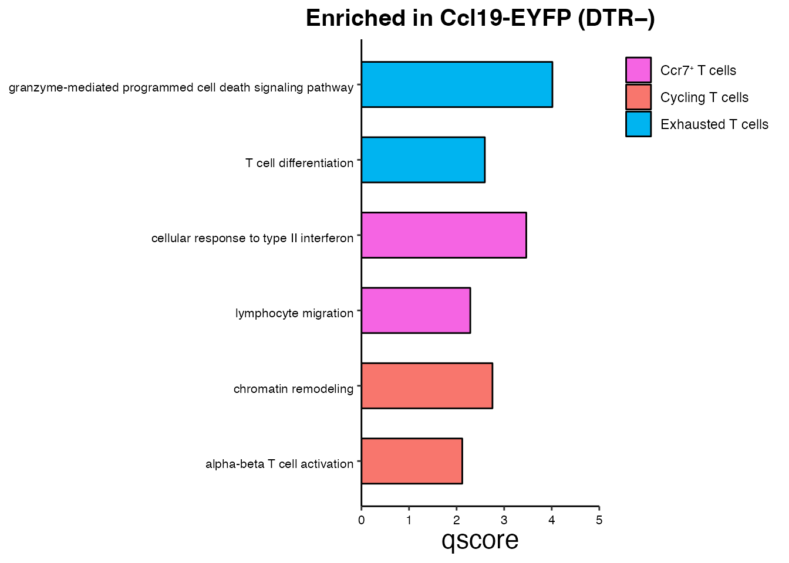

Ccl19-expressing FRCs control anti-tumor T cell responses
Chrysa Papadopoulou
Last updated: 2024-09-23
Checks: 7 0
Knit directory: CCL19_FRCs_lung_cancer/
This reproducible R Markdown analysis was created with workflowr (version 1.7.1). The Checks tab describes the reproducibility checks that were applied when the results were created. The Past versions tab lists the development history.
Great! Since the R Markdown file has been committed to the Git repository, you know the exact version of the code that produced these results.
Great job! The global environment was empty. Objects defined in the global environment can affect the analysis in your R Markdown file in unknown ways. For reproduciblity it’s best to always run the code in an empty environment.
The command set.seed(20240808) was run prior to running
the code in the R Markdown file. Setting a seed ensures that any results
that rely on randomness, e.g. subsampling or permutations, are
reproducible.
Great job! Recording the operating system, R version, and package versions is critical for reproducibility.
Nice! There were no cached chunks for this analysis, so you can be confident that you successfully produced the results during this run.
Great job! Using relative paths to the files within your workflowr project makes it easier to run your code on other machines.
Great! You are using Git for version control. Tracking code development and connecting the code version to the results is critical for reproducibility.
The results in this page were generated with repository version 73add44. See the Past versions tab to see a history of the changes made to the R Markdown and HTML files.
Note that you need to be careful to ensure that all relevant files for
the analysis have been committed to Git prior to generating the results
(you can use wflow_publish or
wflow_git_commit). workflowr only checks the R Markdown
file, but you know if there are other scripts or data files that it
depends on. Below is the status of the Git repository when the results
were generated:
Ignored files:
Ignored: .DS_Store
Ignored: analysis/.DS_Store
Ignored: data/Final_submission/
Ignored: data/Human/
Ignored: data/Mouse/
Ignored: data/Public/
Ignored: output/GSEA_AdvFB_SULF1/
Ignored: output/GSEA_AdvFB_TLS/
Ignored: output/GSEA_CCR7_T/
Ignored: output/GSEA_CD8_T/
Ignored: output/GSEA_CYCL_T/
Ignored: output/GSEA_EXH_T/
Ignored: output/GSEA_SMC_PRC/
Untracked files:
Untracked: README.html
Untracked: analysis/.h5seurat
Untracked: analysis/Compare_tumors.Rmd
Untracked: analysis/NSCLC_PDAC_CAFs.Rmd
Untracked: analysis/NSCLC_vs_BRCA_CAFs.Rmd
Untracked: analysis/Seurat_to_SCE.Rmd
Untracked: analysis/Total_CD8_DTR_Tetra.Rmd
Untracked: analysis/compression.Rmd
Untracked: analysis/index_hidden.Rmd
Untracked: analysis/mcov_R.Rmd
Unstaged changes:
Modified: analysis/merge_NSCLC_FRC_TIL.Rmd
Note that any generated files, e.g. HTML, png, CSS, etc., are not included in this status report because it is ok for generated content to have uncommitted changes.
These are the previous versions of the repository in which changes were
made to the R Markdown (analysis/Tetra_CD8_T_cells.Rmd) and
HTML (docs/Tetra_CD8_T_cells.html) files. If you’ve
configured a remote Git repository (see ?wflow_git_remote),
click on the hyperlinks in the table below to view the files as they
were in that past version.
| File | Version | Author | Date | Message |
|---|---|---|---|---|
| Rmd | 73add44 | Pchryssa | 2024-09-23 | Modify figure order |
| html | 670ca3f | Pchryssa | 2024-08-21 | Build site. |
| Rmd | 6a1b87c | Pchryssa | 2024-08-21 | Tetra CD8 T cells |
Load packages
suppressPackageStartupMessages({
library(here)
library(purrr)
library(dplyr)
library(stringr)
library(patchwork)
library(Seurat)
library(Matrix)
library(gridExtra)
library(gsubfn)
library(ggsci)
library(biomaRt)
library(tidyverse)
library(msigdbr)
library(stats)
library(clusterProfiler)
library(dict)
library(openxlsx)
library(DOSE)
library(enrichplot)
library(dittoSeq)
})Set directory
basedir <- here()Read GP33/34⁺ CD8⁺ T cells sorted from LLC-gp33 bearing DTR⁺ and DTR\(^−\) lungs on day 23, after mCOV-Flt3l-gp33 immunization
Tetra_CD8 <- readRDS(paste0(basedir,"/data/Mouse/Tetra_CD8_EXH.rds"))Set color palette
cols <- c("#F8766D","#B79F00","#00C08B","#F564E3","#00B4F0")
names(cols) <-c("Cycling T cells","Eff. Mem. T cells","Effector T cells",paste0("Ccr7", "\U207A ","T cells"),"Exhausted T cells")CD8⁺GP33/34⁺ T cells (mCOV-FIt31-gp33) (Figure 7F)
Umap
DimPlot(Tetra_CD8, reduction = "umap", group.by = "annot", cols = cols)+
theme_bw() +
theme(axis.text = element_blank(), axis.ticks = element_blank(),
panel.grid.minor = element_blank(),
panel.grid.major = element_blank()) +
xlab("UMAP1") +
ylab("UMAP2") + ggtitle(paste0("CD8", "\U207A ", "GP33/34" , "\U207A ", "T cells (mCOV-FIt31-g33)"))
| Version | Author | Date |
|---|---|---|
| 80d46cf | Pchryssa | 2024-08-26 |
DTR−
DTRneg <-subset(Tetra_CD8, depleted==paste0("DTR", expression("\u2212")))
DimPlot(DTRneg, reduction = "umap", group.by = "depleted",split.by = "depleted")+
theme_bw() +
theme(axis.text = element_blank(), axis.ticks = element_blank(),
panel.grid.minor = element_blank(),
panel.grid.major = element_blank()) +
xlab("UMAP1") +
ylab("UMAP2")
| Version | Author | Date |
|---|---|---|
| 80d46cf | Pchryssa | 2024-08-26 |
DTR\(^⁺\)
DTRpos <-subset(Tetra_CD8, depleted==paste0("DTR", expression("\u207A")))
DimPlot(DTRpos, reduction = "umap", group.by = "depleted",split.by = "depleted")+
theme_bw() +
theme(axis.text = element_blank(), axis.ticks = element_blank(),
panel.grid.minor = element_blank(),
panel.grid.major = element_blank()) +
xlab("UMAP1") +
ylab("UMAP2")
| Version | Author | Date |
|---|---|---|
| 80d46cf | Pchryssa | 2024-08-26 |
Dotplot CD8⁺ T cell subsets (Supplementary Figure 11E)
data_conv <-Tetra_CD8
data_conv <-Remove_ensebl_id(data_conv)
Idents(data_conv) <- data_conv$annot
levels(data_conv)<-levels(data_conv)[order(match(levels(data_conv),c(paste0("Ccr7", "\U207A ","T cells"),"Exhausted T cells","Effector T cells","Eff. Mem. T cells","Cycling T cells")))]
data_conv$cell_type <- factor(as.character(data_conv@active.ident), levels = rev(c(paste0("Ccr7", "\U207A ","T cells"),"Exhausted T cells","Effector T cells","Eff. Mem. T cells","Cycling T cells")))
gene_list <-c("Pclaf","Top2a","Mki67","Mcm7","Klrg1","Gzma","Lef1","Klf2","Ifng","Ccl4","Xcl1","Il2","Gzmb","Havcr2","Ctla4","Prf1",
"Lag3","Pdcd1","Tigit", "Tox","Ccr7","Tcf7","Tnfsf4","Cd83")
dittoDotPlot(data_conv, vars = gene_list, group.by = "cell_type", size = 5,legend.size.title = "Expression (%)",scale = TRUE,summary.fxn.color = mean) + ylab( " ")
| Version | Author | Date |
|---|---|---|
| 80d46cf | Pchryssa | 2024-08-26 |
Pathway analysis
Enriched in DTR\(^−\) exhausted T cells (Figure 7G)
# Step 1 : Set output directory
subDir <- "GSEA_EXH_T/"
saving_path <- paste0(basedir,"/output/")
final_dir <- file.path(saving_path, subDir)
dir.create(final_dir, showWarnings = FALSE,recursive = TRUE)
map_df <- ExtractMouseGeneSets(final_dir)
# Step 2: Customize parameters
httr::set_config(httr::config(ssl_verifypeer = FALSE))
organism <- "org.Mm.eg.db"
disease_phase <- "Depl_vs_NDepl"
datatype <- "SYMBOL"
Exh_T <-subset(Tetra_CD8, annot %in% "Exhausted T cells")
Idents(Exh_T) <- Exh_T$depleted
DEmarkers <-FindAllMarkers(Exh_T, only.pos=T, logfc.threshold = 0.1,
min.pct = 0.1)
Vec <-unique(Exh_T$depleted)
EnrichParameters_EXH_T <-customize_parameters(Vec,DEmarkers,organism,datatype,disease_phase,saving_path) [1] "Finish Enrichment_Analysis for GO DTR⁺"
[1] "Finish Enrichment_Analysis for GO DTR−"#Step 3: Plot gene-concept network
pathways <-c("lymphocyte mediated immunity","leukocyte cell-cell adhesion","leukocyte mediated cytotoxicity")
cnetplot(EnrichParameters_EXH_T$enrichcl_list[[2]], node_label="gene", layout = "kk", showCategory = pathways,
max.overlaps=Inf,color.params = list(gene ="black",
category = "red",
edge = TRUE),cex.params = list(category_label = 0.0000001,
label_gene = 0.000001, gene_label= 0.6)) +
theme(legend.text = element_text(size = 8))
| Version | Author | Date |
|---|---|---|
| 80d46cf | Pchryssa | 2024-08-26 |
Enriched in DTR\(^−\) cycling T cells (Figure 7H)
# Step 1 : Set output directory
subDir <- "GSEA_CYCL_T/"
saving_path <- paste0(basedir,"/output/")
final_dir <- file.path(saving_path, subDir)
dir.create(final_dir, showWarnings = FALSE,recursive = TRUE)
map_df <- ExtractMouseGeneSets(final_dir)
# Step 2: Customize parameters
httr::set_config(httr::config(ssl_verifypeer = FALSE))
organism <- "org.Mm.eg.db"
disease_phase <- "Depl_vs_NDepl"
datatype <- "SYMBOL"
Cycling_T <-subset(Tetra_CD8, annot %in% "Cycling T cells")
Idents(Cycling_T) <- Cycling_T$depleted
DEmarkers <-FindAllMarkers(Cycling_T, only.pos=T, logfc.threshold = 0.1,
min.pct = 0.1)
Vec <-unique(Cycling_T$depleted)
EnrichParameters_CYCL_T <-customize_parameters(Vec,DEmarkers,organism,datatype,disease_phase,saving_path) [1] "Finish Enrichment_Analysis for GO DTR⁺"
[1] "Finish Enrichment_Analysis for GO DTR−"#Step 3: Plot gene-concept network
pathways <-c("mitotic cell cycle phase transition","regulation of apoptotic signaling pathway","regulation of leukocyte differentiation")
cnetplot(EnrichParameters_CYCL_T$enrichcl_list[[2]], node_label="gene", layout = "kk", showCategory = pathways,
max.overlaps=Inf,color.params = list(gene ="black",
category = "red",
edge = TRUE),cex.params = list(category_label = 0.0000001,
label_gene = 0.000001, gene_label= 0.6)) +
theme(legend.text = element_text(size = 8))
| Version | Author | Date |
|---|---|---|
| 80d46cf | Pchryssa | 2024-08-26 |
Enriched in DTR\(^−\) Ccr7⁺ T cells (Supplementary Figure 11F)
# Step 1 : Set output directory
subDir <- "GSEA_CCR7_T/"
saving_path <- paste0(basedir,"/output/")
final_dir <- file.path(saving_path, subDir)
dir.create(final_dir, showWarnings = FALSE,recursive = TRUE)
map_df <- ExtractMouseGeneSets(final_dir)
# Step 2: Customize parameters
httr::set_config(httr::config(ssl_verifypeer = FALSE))
organism <- "org.Mm.eg.db"
disease_phase <- "Depl_vs_NDepl"
datatype <- "SYMBOL"
Ccr7_T <-subset(Tetra_CD8, annot %in% paste0("Ccr7", "\U207A ","T cells"))
Idents(Ccr7_T) <- Ccr7_T$depleted
DEmarkers <-FindAllMarkers(Ccr7_T, only.pos=T, logfc.threshold = 0.1,
min.pct = 0.1)
Vec <-unique(Ccr7_T$depleted)
EnrichParameters_CCR7_T <-customize_parameters(Vec,DEmarkers,organism,datatype,disease_phase,saving_path) [1] "Finish Enrichment_Analysis for GO DTR⁺"
[1] "Finish Enrichment_Analysis for GO DTR−"Enriched in Ccl19-EYFP (DTR\(^−\))
ccr7_data <-EnrichParameters_CCR7_T$enrichcl_list[[2]]@result
ccr7_data$Color <-rep("#F564E3",nrow(ccr7_data))
ccr7_data$CellType <-rep(paste0("Ccr7", "\U207A ","T cells"),nrow(ccr7_data))
exh_data <-EnrichParameters_EXH_T$enrichcl_list[[2]]@result
exh_data$Color <-rep("#00B4F0",nrow(exh_data))
exh_data$CellType <-rep("Exhausted T cells",nrow(exh_data))
cycl_data <-EnrichParameters_CYCL_T$enrichcl_list[[2]]@result
cycl_data$Color <-rep("#F8766D",nrow(cycl_data))
cycl_data$CellType <-rep("Cycling T cells",nrow(cycl_data))
df_list <-list(ccr7_data,exh_data,cycl_data)
new_df<-do.call("rbind", df_list)
# Filter on the most significant pathways (keep rows where p.adjust<= 0.05)
test <-new_df[new_df$p.adjust <= 0.05,]
pathways <- c("granzyme-mediated programmed cell death signaling pathway","T cell differentiation",
"cellular response to type II interferon","lymphocyte migration",
"chromatin remodeling" ,"alpha-beta T cell activation")
BarPlot(test,pathways,cols)
| Version | Author | Date |
|---|---|---|
| 80d46cf | Pchryssa | 2024-08-26 |
Session info
sessionInfo()R version 4.3.1 (2023-06-16)
Platform: aarch64-apple-darwin20 (64-bit)
Running under: macOS Ventura 13.6.9
Matrix products: default
BLAS: /Library/Frameworks/R.framework/Versions/4.3-arm64/Resources/lib/libRblas.0.dylib
LAPACK: /Library/Frameworks/R.framework/Versions/4.3-arm64/Resources/lib/libRlapack.dylib; LAPACK version 3.11.0
locale:
[1] en_US.UTF-8/en_US.UTF-8/en_US.UTF-8/C/en_US.UTF-8/en_US.UTF-8
time zone: Europe/Zurich
tzcode source: internal
attached base packages:
[1] stats graphics grDevices utils datasets methods base
other attached packages:
[1] dittoSeq_1.12.1 enrichplot_1.20.0 DOSE_3.26.1
[4] openxlsx_4.2.5.2 dict_0.10.0 clusterProfiler_4.8.2
[7] msigdbr_7.5.1 lubridate_1.9.2 forcats_1.0.0
[10] readr_2.1.4 ggplot2_3.4.2 tidyverse_2.0.0
[13] biomaRt_2.56.1 ggsci_3.0.0 gsubfn_0.7
[16] proto_1.0.0 gridExtra_2.3 Matrix_1.6-0
[19] SeuratObject_4.1.3 Seurat_4.3.0.1 patchwork_1.1.2
[22] stringr_1.5.0 dplyr_1.1.2 purrr_1.0.1
[25] here_1.0.1 magrittr_2.0.3 circlize_0.4.15
[28] tidyr_1.3.0 tibble_3.2.1 workflowr_1.7.1
loaded via a namespace (and not attached):
[1] fs_1.6.3 matrixStats_1.0.0
[3] spatstat.sparse_3.0-2 bitops_1.0-7
[5] HDO.db_0.99.1 httr_1.4.6
[7] RColorBrewer_1.1-3 tools_4.3.1
[9] sctransform_0.3.5 utf8_1.2.3
[11] R6_2.5.1 lazyeval_0.2.2
[13] uwot_0.1.16 withr_2.5.0
[15] sp_2.0-0 prettyunits_1.1.1
[17] progressr_0.13.0 textshaping_0.3.6
[19] cli_3.6.1 Biobase_2.60.0
[21] spatstat.explore_3.2-1 scatterpie_0.2.1
[23] labeling_0.4.2 sass_0.4.7
[25] spatstat.data_3.0-1 ggridges_0.5.4
[27] pbapply_1.7-2 systemfonts_1.0.4
[29] yulab.utils_0.0.6 gson_0.1.0
[31] parallelly_1.36.0 limma_3.56.2
[33] rstudioapi_0.15.0 RSQLite_2.3.1
[35] generics_0.1.3 gridGraphics_0.5-1
[37] shape_1.4.6 ica_1.0-3
[39] spatstat.random_3.1-5 zip_2.3.0
[41] GO.db_3.17.0 fansi_1.0.4
[43] S4Vectors_0.38.1 abind_1.4-5
[45] lifecycle_1.0.3 whisker_0.4.1
[47] yaml_2.3.7 SummarizedExperiment_1.30.2
[49] SparseArray_1.2.4 qvalue_2.32.0
[51] BiocFileCache_2.8.0 Rtsne_0.16
[53] grid_4.3.1 blob_1.2.4
[55] promises_1.2.0.1 crayon_1.5.2
[57] miniUI_0.1.1.1 lattice_0.21-8
[59] cowplot_1.1.1 KEGGREST_1.40.0
[61] pillar_1.9.0 knitr_1.43
[63] GenomicRanges_1.52.0 fgsea_1.26.0
[65] tcltk_4.3.1 future.apply_1.11.0
[67] codetools_0.2-19 fastmatch_1.1-4
[69] leiden_0.4.3 glue_1.6.2
[71] getPass_0.2-4 downloader_0.4
[73] ggfun_0.1.1 data.table_1.14.8
[75] vctrs_0.6.3 png_0.1-8
[77] treeio_1.24.3 org.Mm.eg.db_3.17.0
[79] gtable_0.3.3 cachem_1.0.8
[81] xfun_0.39 S4Arrays_1.2.1
[83] mime_0.12 tidygraph_1.2.3
[85] survival_3.5-5 pheatmap_1.0.12
[87] SingleCellExperiment_1.22.0 ellipsis_0.3.2
[89] fitdistrplus_1.1-11 ROCR_1.0-11
[91] nlme_3.1-162 ggtree_3.8.2
[93] bit64_4.0.5 progress_1.2.2
[95] filelock_1.0.2 RcppAnnoy_0.0.21
[97] GenomeInfoDb_1.36.1 rprojroot_2.0.3
[99] bslib_0.5.0 irlba_2.3.5.1
[101] KernSmooth_2.23-22 colorspace_2.1-0
[103] BiocGenerics_0.46.0 DBI_1.1.3
[105] tidyselect_1.2.0 processx_3.8.2
[107] bit_4.0.5 compiler_4.3.1
[109] curl_5.0.1 git2r_0.33.0
[111] xml2_1.3.5 DelayedArray_0.28.0
[113] plotly_4.10.2 shadowtext_0.1.2
[115] scales_1.2.1 lmtest_0.9-40
[117] callr_3.7.3 rappdirs_0.3.3
[119] digest_0.6.33 goftest_1.2-3
[121] spatstat.utils_3.1-0 rmarkdown_2.23
[123] XVector_0.40.0 htmltools_0.5.5
[125] pkgconfig_2.0.3 MatrixGenerics_1.12.3
[127] highr_0.10 dbplyr_2.3.3
[129] fastmap_1.1.1 rlang_1.1.1
[131] GlobalOptions_0.1.2 htmlwidgets_1.6.2
[133] shiny_1.7.4.1 farver_2.1.1
[135] jquerylib_0.1.4 zoo_1.8-12
[137] jsonlite_1.8.7 BiocParallel_1.34.2
[139] GOSemSim_2.26.1 RCurl_1.98-1.12
[141] GenomeInfoDbData_1.2.10 ggplotify_0.1.1
[143] munsell_0.5.0 Rcpp_1.0.11
[145] ape_5.7-1 babelgene_22.9
[147] viridis_0.6.4 reticulate_1.36.1
[149] stringi_1.7.12 ggraph_2.1.0
[151] zlibbioc_1.46.0 MASS_7.3-60
[153] plyr_1.8.8 parallel_4.3.1
[155] listenv_0.9.0 ggrepel_0.9.3
[157] deldir_1.0-9 Biostrings_2.68.1
[159] graphlayouts_1.0.0 splines_4.3.1
[161] tensor_1.5 hms_1.1.3
[163] ps_1.7.5 igraph_1.5.0.1
[165] spatstat.geom_3.2-4 reshape2_1.4.4
[167] stats4_4.3.1 XML_3.99-0.14
[169] evaluate_0.21 tzdb_0.4.0
[171] tweenr_2.0.2 httpuv_1.6.11
[173] RANN_2.6.1 polyclip_1.10-4
[175] future_1.33.0 scattermore_1.2
[177] ggforce_0.4.1 xtable_1.8-4
[179] tidytree_0.4.4 later_1.3.1
[181] ragg_1.2.5 viridisLite_0.4.2
[183] aplot_0.1.10 memoise_2.0.1
[185] AnnotationDbi_1.62.2 IRanges_2.34.1
[187] cluster_2.1.4 timechange_0.2.0
[189] globals_0.16.2 date()[1] "Mon Sep 23 13:39:02 2024"
sessionInfo()R version 4.3.1 (2023-06-16)
Platform: aarch64-apple-darwin20 (64-bit)
Running under: macOS Ventura 13.6.9
Matrix products: default
BLAS: /Library/Frameworks/R.framework/Versions/4.3-arm64/Resources/lib/libRblas.0.dylib
LAPACK: /Library/Frameworks/R.framework/Versions/4.3-arm64/Resources/lib/libRlapack.dylib; LAPACK version 3.11.0
locale:
[1] en_US.UTF-8/en_US.UTF-8/en_US.UTF-8/C/en_US.UTF-8/en_US.UTF-8
time zone: Europe/Zurich
tzcode source: internal
attached base packages:
[1] stats graphics grDevices utils datasets methods base
other attached packages:
[1] dittoSeq_1.12.1 enrichplot_1.20.0 DOSE_3.26.1
[4] openxlsx_4.2.5.2 dict_0.10.0 clusterProfiler_4.8.2
[7] msigdbr_7.5.1 lubridate_1.9.2 forcats_1.0.0
[10] readr_2.1.4 ggplot2_3.4.2 tidyverse_2.0.0
[13] biomaRt_2.56.1 ggsci_3.0.0 gsubfn_0.7
[16] proto_1.0.0 gridExtra_2.3 Matrix_1.6-0
[19] SeuratObject_4.1.3 Seurat_4.3.0.1 patchwork_1.1.2
[22] stringr_1.5.0 dplyr_1.1.2 purrr_1.0.1
[25] here_1.0.1 magrittr_2.0.3 circlize_0.4.15
[28] tidyr_1.3.0 tibble_3.2.1 workflowr_1.7.1
loaded via a namespace (and not attached):
[1] fs_1.6.3 matrixStats_1.0.0
[3] spatstat.sparse_3.0-2 bitops_1.0-7
[5] HDO.db_0.99.1 httr_1.4.6
[7] RColorBrewer_1.1-3 tools_4.3.1
[9] sctransform_0.3.5 utf8_1.2.3
[11] R6_2.5.1 lazyeval_0.2.2
[13] uwot_0.1.16 withr_2.5.0
[15] sp_2.0-0 prettyunits_1.1.1
[17] progressr_0.13.0 textshaping_0.3.6
[19] cli_3.6.1 Biobase_2.60.0
[21] spatstat.explore_3.2-1 scatterpie_0.2.1
[23] labeling_0.4.2 sass_0.4.7
[25] spatstat.data_3.0-1 ggridges_0.5.4
[27] pbapply_1.7-2 systemfonts_1.0.4
[29] yulab.utils_0.0.6 gson_0.1.0
[31] parallelly_1.36.0 limma_3.56.2
[33] rstudioapi_0.15.0 RSQLite_2.3.1
[35] generics_0.1.3 gridGraphics_0.5-1
[37] shape_1.4.6 ica_1.0-3
[39] spatstat.random_3.1-5 zip_2.3.0
[41] GO.db_3.17.0 fansi_1.0.4
[43] S4Vectors_0.38.1 abind_1.4-5
[45] lifecycle_1.0.3 whisker_0.4.1
[47] yaml_2.3.7 SummarizedExperiment_1.30.2
[49] SparseArray_1.2.4 qvalue_2.32.0
[51] BiocFileCache_2.8.0 Rtsne_0.16
[53] grid_4.3.1 blob_1.2.4
[55] promises_1.2.0.1 crayon_1.5.2
[57] miniUI_0.1.1.1 lattice_0.21-8
[59] cowplot_1.1.1 KEGGREST_1.40.0
[61] pillar_1.9.0 knitr_1.43
[63] GenomicRanges_1.52.0 fgsea_1.26.0
[65] tcltk_4.3.1 future.apply_1.11.0
[67] codetools_0.2-19 fastmatch_1.1-4
[69] leiden_0.4.3 glue_1.6.2
[71] getPass_0.2-4 downloader_0.4
[73] ggfun_0.1.1 data.table_1.14.8
[75] vctrs_0.6.3 png_0.1-8
[77] treeio_1.24.3 org.Mm.eg.db_3.17.0
[79] gtable_0.3.3 cachem_1.0.8
[81] xfun_0.39 S4Arrays_1.2.1
[83] mime_0.12 tidygraph_1.2.3
[85] survival_3.5-5 pheatmap_1.0.12
[87] SingleCellExperiment_1.22.0 ellipsis_0.3.2
[89] fitdistrplus_1.1-11 ROCR_1.0-11
[91] nlme_3.1-162 ggtree_3.8.2
[93] bit64_4.0.5 progress_1.2.2
[95] filelock_1.0.2 RcppAnnoy_0.0.21
[97] GenomeInfoDb_1.36.1 rprojroot_2.0.3
[99] bslib_0.5.0 irlba_2.3.5.1
[101] KernSmooth_2.23-22 colorspace_2.1-0
[103] BiocGenerics_0.46.0 DBI_1.1.3
[105] tidyselect_1.2.0 processx_3.8.2
[107] bit_4.0.5 compiler_4.3.1
[109] curl_5.0.1 git2r_0.33.0
[111] xml2_1.3.5 DelayedArray_0.28.0
[113] plotly_4.10.2 shadowtext_0.1.2
[115] scales_1.2.1 lmtest_0.9-40
[117] callr_3.7.3 rappdirs_0.3.3
[119] digest_0.6.33 goftest_1.2-3
[121] spatstat.utils_3.1-0 rmarkdown_2.23
[123] XVector_0.40.0 htmltools_0.5.5
[125] pkgconfig_2.0.3 MatrixGenerics_1.12.3
[127] highr_0.10 dbplyr_2.3.3
[129] fastmap_1.1.1 rlang_1.1.1
[131] GlobalOptions_0.1.2 htmlwidgets_1.6.2
[133] shiny_1.7.4.1 farver_2.1.1
[135] jquerylib_0.1.4 zoo_1.8-12
[137] jsonlite_1.8.7 BiocParallel_1.34.2
[139] GOSemSim_2.26.1 RCurl_1.98-1.12
[141] GenomeInfoDbData_1.2.10 ggplotify_0.1.1
[143] munsell_0.5.0 Rcpp_1.0.11
[145] ape_5.7-1 babelgene_22.9
[147] viridis_0.6.4 reticulate_1.36.1
[149] stringi_1.7.12 ggraph_2.1.0
[151] zlibbioc_1.46.0 MASS_7.3-60
[153] plyr_1.8.8 parallel_4.3.1
[155] listenv_0.9.0 ggrepel_0.9.3
[157] deldir_1.0-9 Biostrings_2.68.1
[159] graphlayouts_1.0.0 splines_4.3.1
[161] tensor_1.5 hms_1.1.3
[163] ps_1.7.5 igraph_1.5.0.1
[165] spatstat.geom_3.2-4 reshape2_1.4.4
[167] stats4_4.3.1 XML_3.99-0.14
[169] evaluate_0.21 tzdb_0.4.0
[171] tweenr_2.0.2 httpuv_1.6.11
[173] RANN_2.6.1 polyclip_1.10-4
[175] future_1.33.0 scattermore_1.2
[177] ggforce_0.4.1 xtable_1.8-4
[179] tidytree_0.4.4 later_1.3.1
[181] ragg_1.2.5 viridisLite_0.4.2
[183] aplot_0.1.10 memoise_2.0.1
[185] AnnotationDbi_1.62.2 IRanges_2.34.1
[187] cluster_2.1.4 timechange_0.2.0
[189] globals_0.16.2